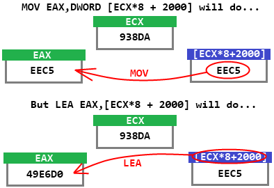

|
Are you getting bored of using ADD and SUB instructions? Let's learn about some new math commands.
Multiplication and Division Instructions IMUL A,B = Multiply A by B. Store the result to A. A must be a register, but B can be a register or memory location. IMUL A,B,C = Multiply B by C. Stores the result to register A. B can be a memory location or register. C must be a hex number. IMUL A = Multiply EAX by A. Stores the result to the register-pair EDX:EAX. A can be a memory location or register. IDIV A = Divides the register-pair EDX:EAX by register or memory location A. Quotient is stored to EAX, remainder is stored to EDX. IMUL stands for Integer Multiplication and IDIV stands for Integer Division. Notice that there are three kinds of IMUL. For the second kind, notice that IMUL can take 3 operands. This is a rare feature among ASM instructions, because most instructions can only take 0, 1, or 2 operands. Unlike IMUL, there is only one kind of IDIV. So, what is with this "register-pair" stuff? Register Pairs I have the numbers 4 and 31. I pair 4 with 31. 4 paired with 31 = 431 I have the numbers 99 and 27. I pair 99 with 27. 99 paired with 27 = 9927 Get it? All you have to do is shove the digits together. Assembly Example 1 Register pairs allow you to hold super-big numbers. Let's say: EDX = 40000700 EAX = 90035FF1 That means register-pair EDX:EAX holds the number: 4000070090035FF1. You can think of EDX:EAX as some sort of "super-register" (that's not really an official term, though). Example 2 Assume: EDX = 16 EAX = 00000525 So that means EDX:EAX holds 1600000525. Example 3 Assume: EDX = 0 EAX = 0 EDX:EAX is just 0. Starting to get the big picture here? This is how IDIV and IMUL work with register pairs. Oh yeah. Don't use IDIV to divide by 0. That would be a bad idea. Cheating with LEA LEA stands for Load Effective Address. It's supposed to "evaluate addresses", but we don't really care. Instead, we're going to use LEA to do math calculations. LEA A,[B] = Evaluates the simple mathematical expression B and stores the answer to register A. You must include the square brackets. Although I said "simple expression", you can do something as complicated as this: LEA EAX,[ECX*4+EDX+1234]The above instruction will multiply ECX by 4, add it to EDX, add that to 1234, and then store the entire thing to EAX. There are some restrictions with LEA though. For example, you can use LEA to multiply a register by a small constant number but not another register. Multiplying a register by another register is more complicated for your computer to do, and you'll need to make use of IMUL. Understanding LEA LEA's square brackets work in a different way than for all other instructions. Normally, square brackets mean, "use this number as an address, and look for the number stored inside this address". LEA's square brackets mean, "calculate this number, which could potentially be used as an address, and store that number to a register". Here's some code that will show the difference between MOV and LEA: MOV EAX,DWORD [ECX*8+2000] LEA EAX,[ECX*8+2000]Notice that LEA does not need the DWORD prefix before the brackets. Also, the above MOV and LEA instructions do completely different things, even though they look quite similar. Let's assume that ECX holds 938DA, and that the memory location DWORD [ECX*8+2000] holds the number EEC5.  For MOV EAX,DWORD [ECX*8+2000], the computer will look
inside the address ECX*8+2000 to find a DWORD-sized number, which will
be EEC5 in this particular case, and then store it to EAX. For LEA EAX,[ECX*8+2000],
the computer will instead calculate the value of ECX*8+2000 and store
the value to EAX. Because we said that ECX = 938DA, that means (938DA * 8
+ 2000) = 49E6D0. (Just use the Windows calculator to do this hex math)So the code actually does this: ;Assuming that ECX = 938DA and that DWORD [49E6D0] = EEC5 ... MOV EAX,DWORD [ECX*8+2000] ;stores EEC5 to EAX. LEA EAX,[ECX*8+2000] ;stores 49E6D0 to EAX.Negatives and Powers of 2 NEG A = Multiplies register A by -1, stores result back to A. SHL A,B = Multiplies register A by 2B, stores back to A. B is a positive number. A is a register or memory location that contains a positive or negative number. SHR A,B = Divides register A by 2B, stores back to A. B is a positive number. A is a register or memory location that should hold a positive number. SAR A,B = Divides register A by 2B, stores back to A. B is a positive number. A is a register or memory location that contains a positive or negative number. SHL, SHR, and SAR work faster than IMUL and IDIV, so consider using them in place of IMUL and IDIV. Other Info SHL actually stands for "Shift Left" and SHR stands for "Shift Right". This is because shifting around the binary digits of a hex number will have the same effect as multiplying or dividing by a power of 2. If you don't want to worry about this now, you don't have to. SAR stands for "Shift Arithmetic Right". Its purpose is to extend the capability of SHR to the negative numbers. Notice that SHL will work with both positives and negatives already. Therefore, you shouldn't need to use SAL. (SAL does exist. It does exactly the same thing as SHL.) Previous Lesson: Translating Ideas to ASM Next Lesson: Calling Functions Table of Contents |